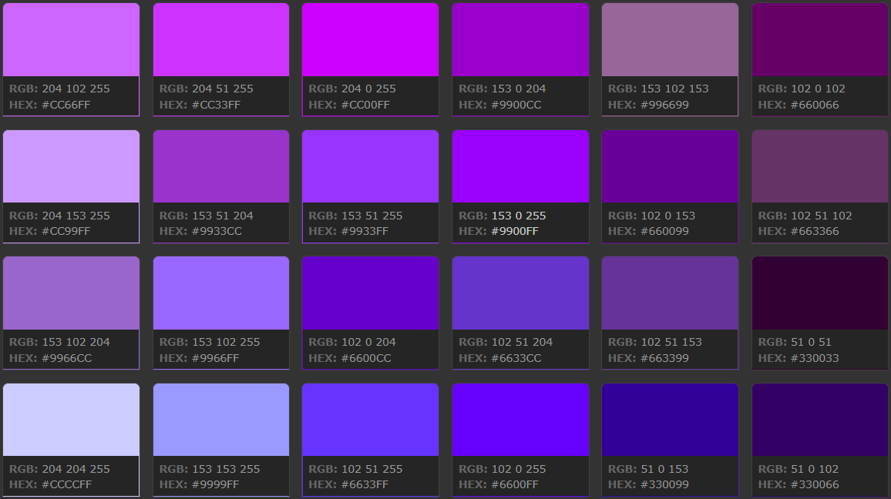

При создании изображения для публикации в сети главной проблемой является правильная передача цвета на разных типах мониторов и в разных браузерах.
Когда браузер не в состоянии правильным образом передать тот или иной цвет, он подбирает похожий или смешивает несколько соседних цветов.
В результате пользователь на своем экране может увидеть совсем не то, что хотел изобразить автор.
Любой из 216 цветов «безопасной» палитры может быть использован для графики, текста и фонов.
Эти цвета везде будут отображаться без искажений.
Палитра состоит из 32 сочетаний 6 оттенков красного, зеленого и синего.
Эти градации - 00, 33, 66, 99, CC, FF. Над каждым цветом указаны значения RGB.
Если веб-сайт имеет какой-либо цветной фон,то лучше всего для этой цели подойдут именно Web Safe цвета. Это гарантирует,что цвет не будет смущать пользователя при отображении на разных компьютерных платформах. Не стоит забывать и о том,что даже старые компьютеры будут представлять ресурс точно,без колебаний и различий в цветах.
